368 accepted Street View views across the selected 1.09 km route; detailed notes and 60 new frontage assemblies. Material previews below are Blender renders. The approved porch and perpendicular garage are retained.
This is a Blender working copy. Heights, concealed footprints and frontage positions remain approximate. Holmdale’s end uses a saved overhead trace. A short Barkby join deviates by up to 20.25 m to preserve older approved buildings. Walls and the closure beyond B are game adaptations. BO3 is unchanged.
Local source photo browser · Checkpoint notes · Latest editable Blender file
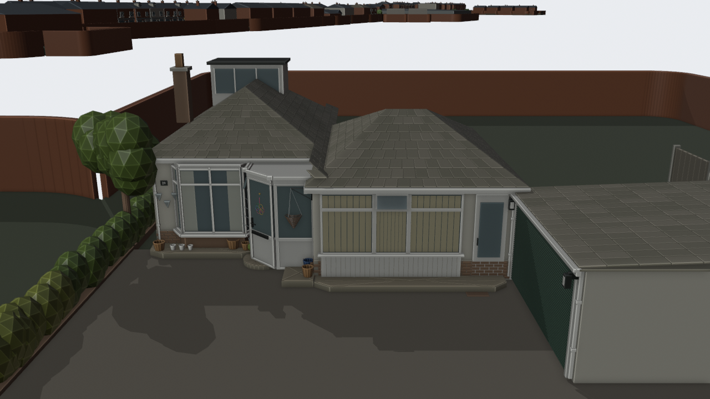
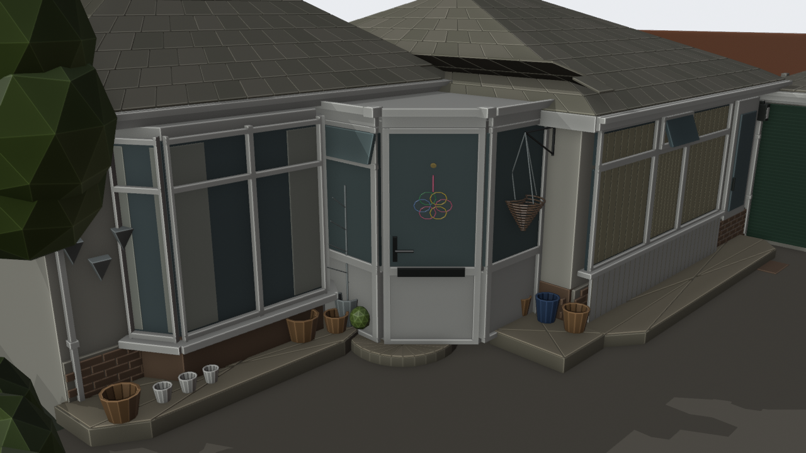
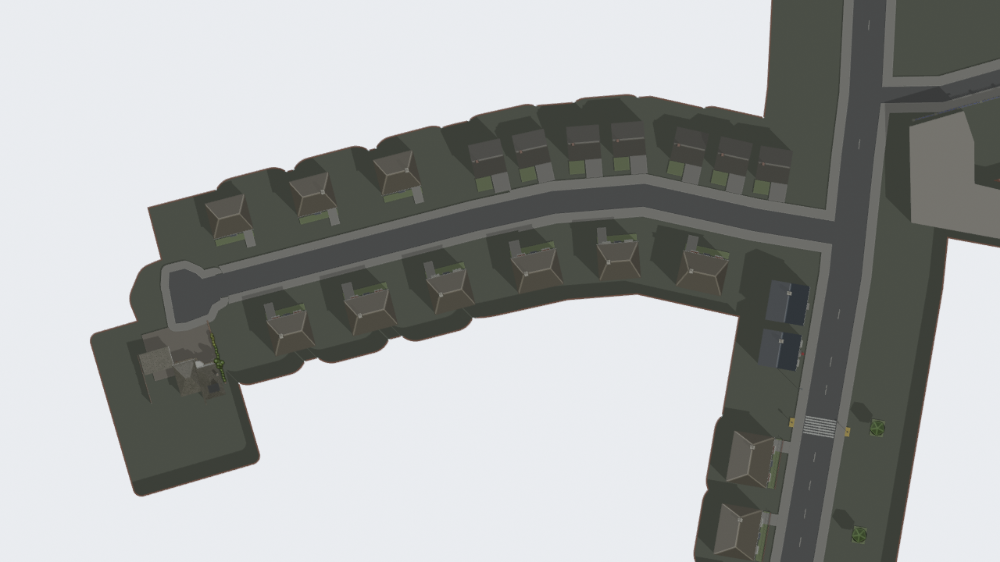
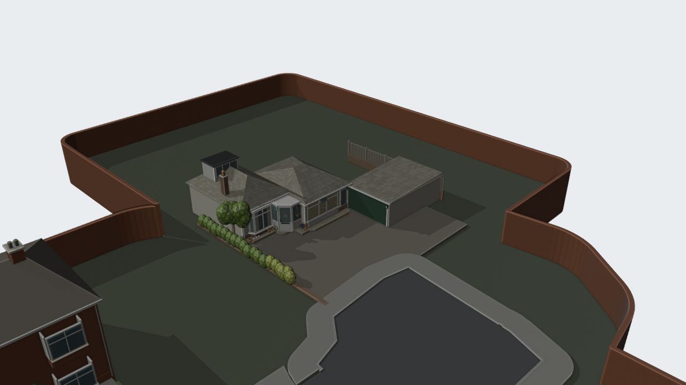
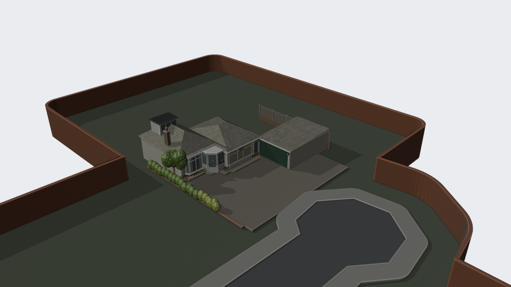
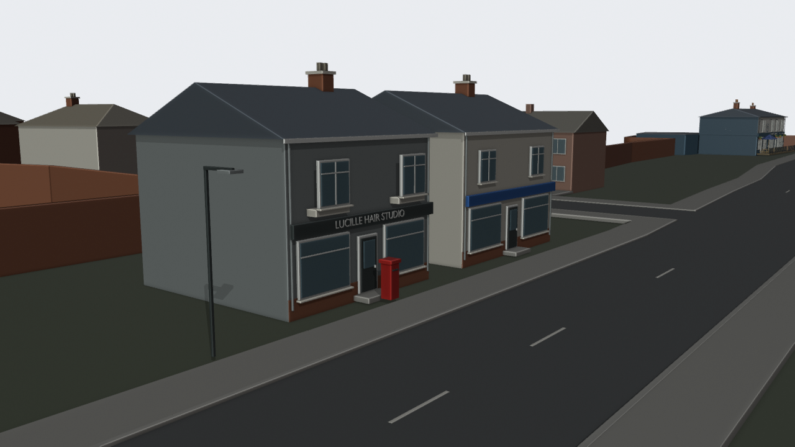
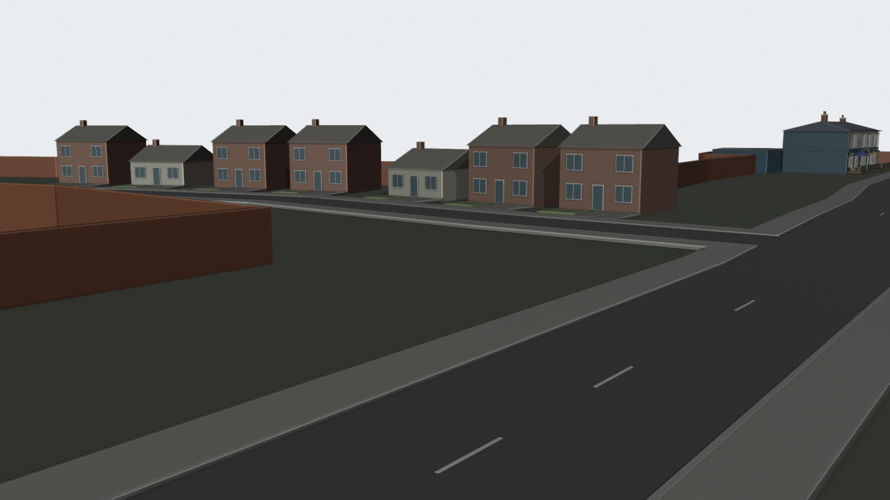
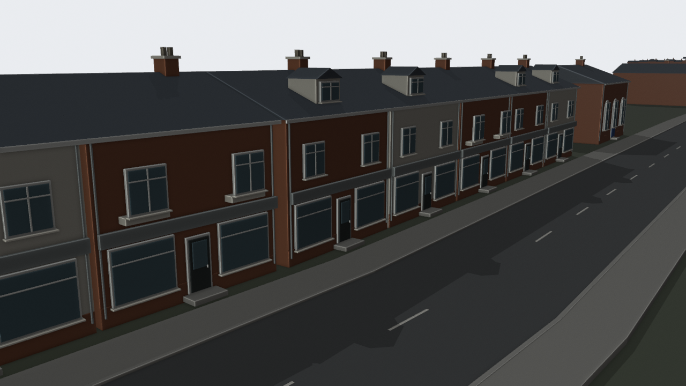
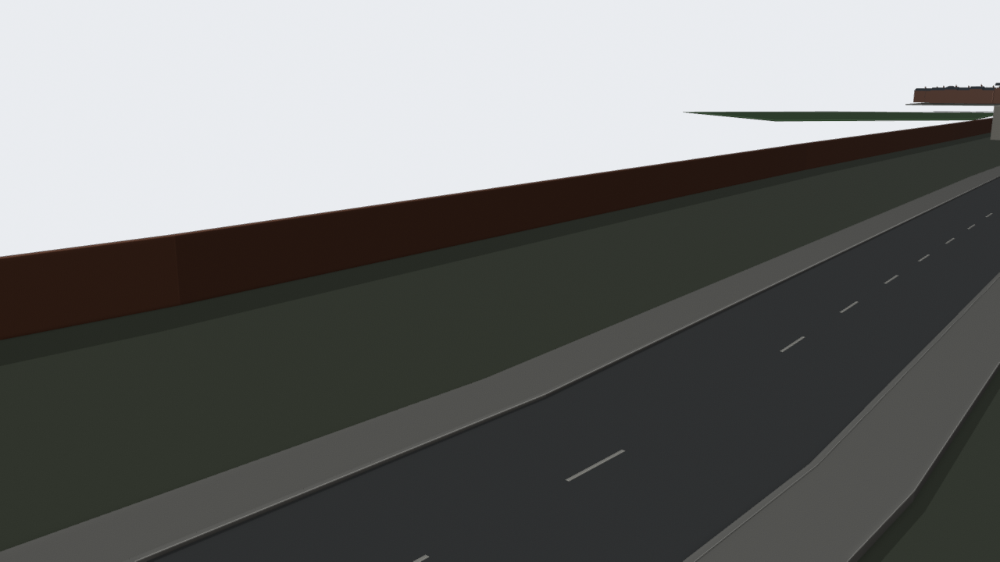
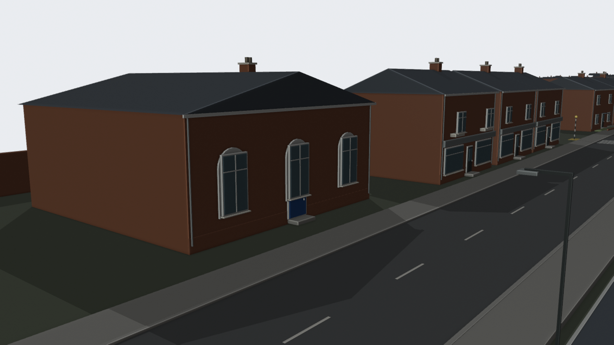
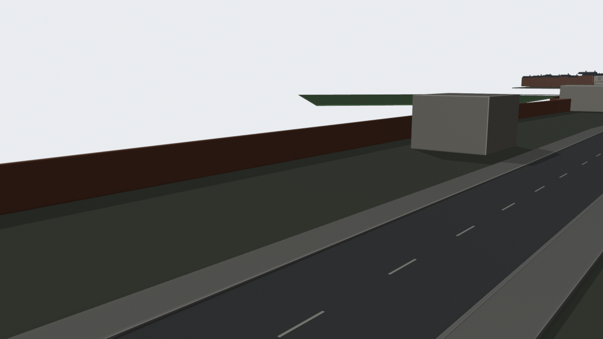
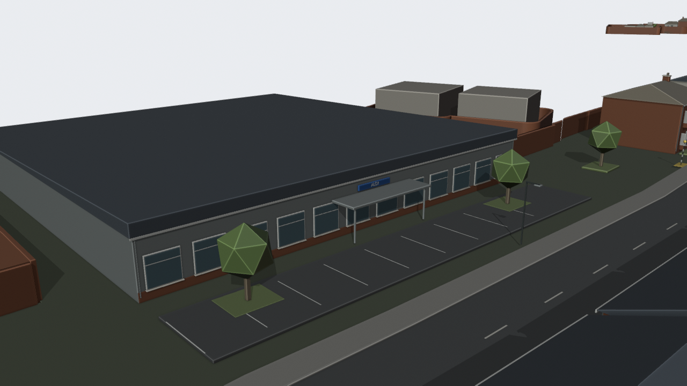
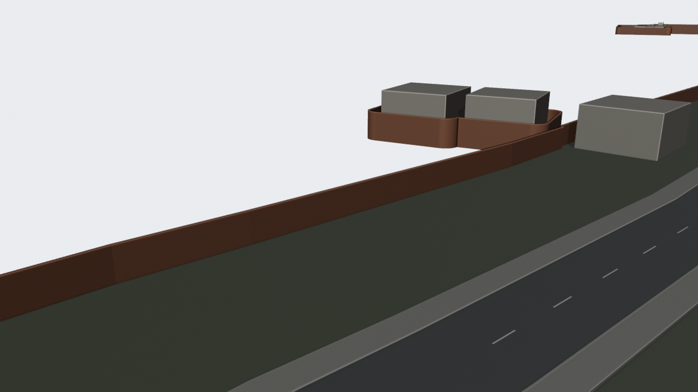
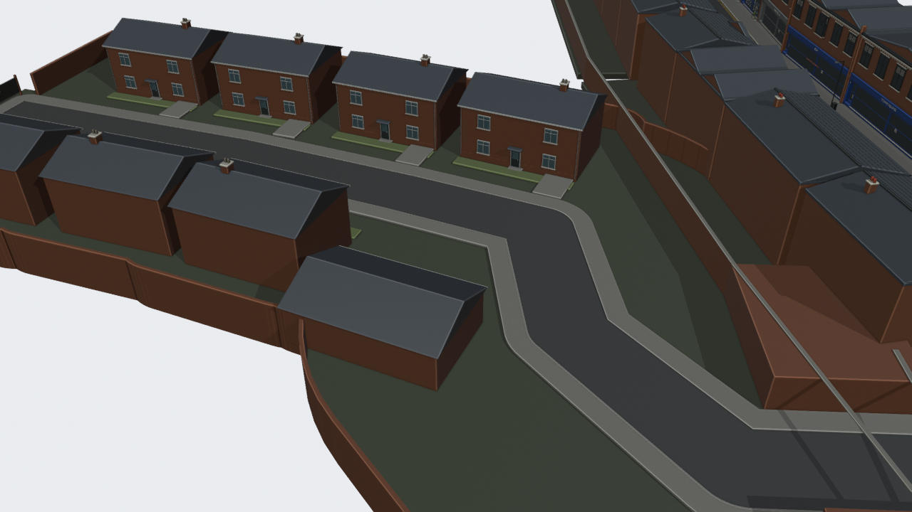
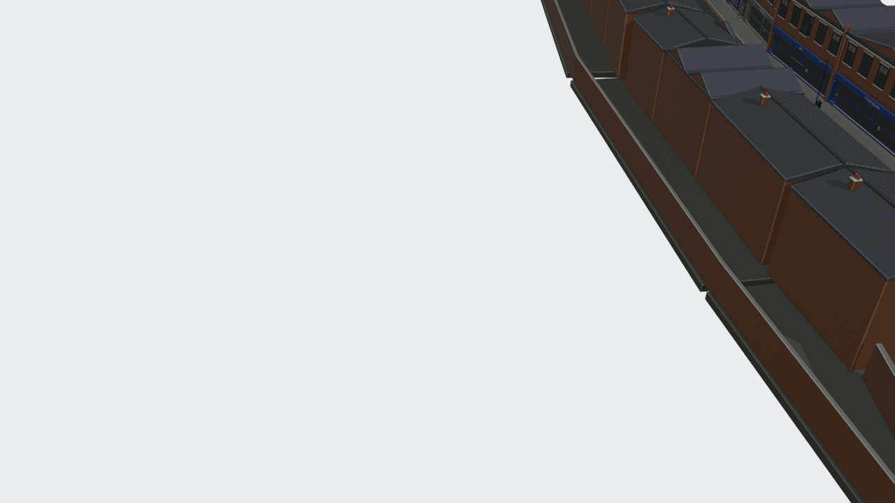
Dimensions are estimates in physical metres; the retained model frame uses 1.06406865 Blender units per metre. Chainage is along the authored route. R001–R009 side placement was corrected in v57; the v57 model and correction manifest take precedence over the trial schedule.
| ID | Feature | Route m | Width / depth / eaves m | Source stops |
|---|---|---|---|---|
| R001 | Opposite Holmdale end plot | 25.0 | 9 / 8 / 2.7 | [3] |
| R002 | Opposite Holmdale end plot | 45.0 | 9 / 8 / 5.6 | [5] |
| R003 | Opposite Holmdale end plot | 65.0 | 9 / 8 / 5.6 | [6] |
| R004 | Holmdale semi / detached frontage | 32.0 | 9.2 / 8 / 5.6 | [4] |
| R005 | Holmdale semi / detached frontage | 51.0 | 10.3 / 8 / 5.6 | [5] |
| R006 | Holmdale semi / detached frontage | 70.0 | 9.2 / 8 / 5.6 | [7] |
| R007 | Holmdale semi / detached frontage | 91.0 | 10.3 / 8 / 5.6 | [9] |
| R008 | Holmdale semi / detached frontage | 112.0 | 9.2 / 8 / 5.6 | [10] |
| R009 | Holmdale semi / detached frontage | 136.0 | 10.3 / 8 / 5.6 | [12] |
| R010 | Blue corner shop | 185.0 | 8.8 / 8.5 / 5.8 | [16, 17] |
| R011 | Lucille Hair Studio | 196.0 | 8 / 8.5 / 5.8 | [17, 18] |
| R012 | Melton hipped semi | 222.0 | 11.5 / 9 / 5.7 | [19] |
| R013 | Melton hipped semi | 239.0 | 11.5 / 9 / 5.7 | [21] |
| R014 | Melton hipped semi | 257.0 | 11.5 / 9 / 5.7 | [22] |
| R015 | Melton hipped semi | 276.0 | 11.5 / 9 / 5.7 | [24] |
| R016 | Church gable and hall | 291.0 | 16 / 22 / 5.3 | [24, 25, 26] |
| R017 | Victorian detached bay house | 310.0 | 11 / 10 / 6.1 | [27] |
| R018 | Victorian sash and bay terrace | 317.0 | 12 / 8.5 / 6 | [27] |
| R019 | Victorian sash and bay terrace | 333.0 | 12 / 8.5 / 6 | [29] |
| R020 | White corner frontage | 335.0 | 8 / 9 / 5.9 | [29] |
| R021 | Green's Off Licence | 350.0 | 9.2 / 10 / 6.4 | [30, 31, 32] |
| R022 | Individual retail terrace | 361.0 | 7.8 / 9 / 6.1 | [31, 33] |
| R023 | Individual retail terrace | 369.0 | 7.8 / 9 / 6.1 | [32, 34] |
| R024 | Individual retail terrace | 378.0 | 7.8 / 9 / 6.1 | [33, 35] |
| R025 | Individual retail terrace | 386.0 | 7.8 / 9 / 6.1 | [34, 36] |
| R026 | Individual retail terrace | 394.0 | 7.8 / 9 / 6.1 | [35, 37] |
| R027 | Individual retail terrace | 402.0 | 7.8 / 9 / 6.1 | [35, 37] |
| R028 | Individual retail terrace | 410.0 | 7.8 / 9 / 6.1 | [35, 37] |
| R029 | Happy Garden corner | 384.0 | 8 / 8.5 / 5.9 | [33, 34] |
| R030 | Adjacent pale gabled shop | 395.0 | 8.5 / 9 / 5.9 | [34] |
| R031 | Modern brick flats | 410.0 | 18 / 11 / 6.2 | [35, 36, 37, 38] |
| R032 | Modern brick flats | 429.0 | 18 / 11 / 6.2 | [35, 36, 37, 38] |
| R033 | Modern brick flats | 448.0 | 18 / 11 / 6.2 | [35, 36, 37, 38] |
| R034 | Arched old brick commercial frontage | 429.0 | 11 / 10 / 6.1 | [37] |
| R035 | Tree corner brick house | 468.0 | 12 / 10 / 5.9 | [40] |
| R036 | L Harris low workshop | 486.0 | 14 / 13 / 3.5 | [41, 42, 43] |
| R037 | Peaked dark small shop | 501.0 | 7.2 / 10 / 3.3 | [43] |
| R038 | Dark cafe corner frontage | 513.0 | 14 / 11 / 6 | [42, 43, 44] |
| R039 | Brick hall with blue doors | 500.0 | 15 / 15 / 6 | [42, 43, 44] |
| R040 | Historic brick retail terrace | 520.0 | 10.5 / 9 / 6.4 | [44] |
| R041 | Historic brick retail terrace | 532.0 | 10.5 / 9 / 6.4 | [45] |
| R042 | Historic brick retail terrace | 543.0 | 10.5 / 9 / 6.4 | [46] |
| R043 | Bay front corner with rails | 540.0 | 11.5 / 10 / 6.1 | [46] |
| R044 | Close brick terrace opposite supermarket | 573.0 | 12 / 9 / 5.9 | [49] |
| R045 | Close brick terrace opposite supermarket | 586.0 | 12 / 9 / 5.9 | [50] |
| R046 | Close brick terrace opposite supermarket | 599.0 | 12 / 9 / 5.9 | [51] |
| R047 | Close brick terrace opposite supermarket | 612.0 | 12 / 9 / 5.9 | [52] |
| R048 | Close brick terrace opposite supermarket | 625.0 | 12 / 9 / 5.9 | [53] |
| R049 | Aldi supermarket | 593.6 | 43 / 44 / 4.4 | [48, 49, 50, 51, 52] |
| R050 | Brick hall and commercial return | 649.0 | 17 / 12 / 6.6 | [55] |
| R051 | Three storey corner retail | 670.0 | 14 / 10 / 8.4 | [57] |
| R052 | Low commercial strip | 654.0 | 26 / 16 / 3.7 | [54, 55, 56] |
| R053 | Barkby brick frontage | 77.1 | 13 / 8.5 / 5.8 | [83, 84] |
| R054 | Barkby service wing | 77.1 | 13 / 8.5 / 3.2 | [83, 84] |
| R055 | Barkby brick frontage | 92.1 | 12 / 8.5 / 5.8 | [85, 86] |
| R056 | Barkby brick frontage | 92.1 | 12 / 8.5 / 5.8 | [85, 86] |
| R057 | Barkby brick frontage | 107.1 | 12 / 8.5 / 5.8 | [87, 88] |
| R058 | Barkby brick frontage | 107.1 | 12 / 8.5 / 5.8 | [87, 88] |
| R059 | Barkby brick frontage | 122.2 | 12 / 8.5 / 5.8 | [89, 90] |
| R060 | Barkby brick frontage | 122.2 | 12 / 8.5 / 5.8 | [89, 90] |